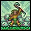
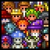

Aquí encontrarás toda la información que necesitas sobre el vasto mundo de Terraria: guías, consejos, biomas, enemigos, y más. Explora y descubre los secretos de este emocionante juego lleno de aventuras.
Guía para principiantes

Terraria es un juego de aventuras en 2D que combina exploración, construcción y combate. Embárcate en un viaje a través de un mundo lleno de misterios.
Contenido sobre Terraria
Guías
Modos

Clases
Pesca
Estaciones
Eventos
Biomas

NPCs

Armas
Herramientas
Armaduras
Accesorios
Bloques

Jefes
Monstruos
Trajes
Logros
Leer más contenido
Objetos
Inobtenibles
Llaves

Pociones
Decoraciones
Lingotes
Minerales
Ganchos
Tesoros
Municiones
Debuffs

Buffs
Mecanismos